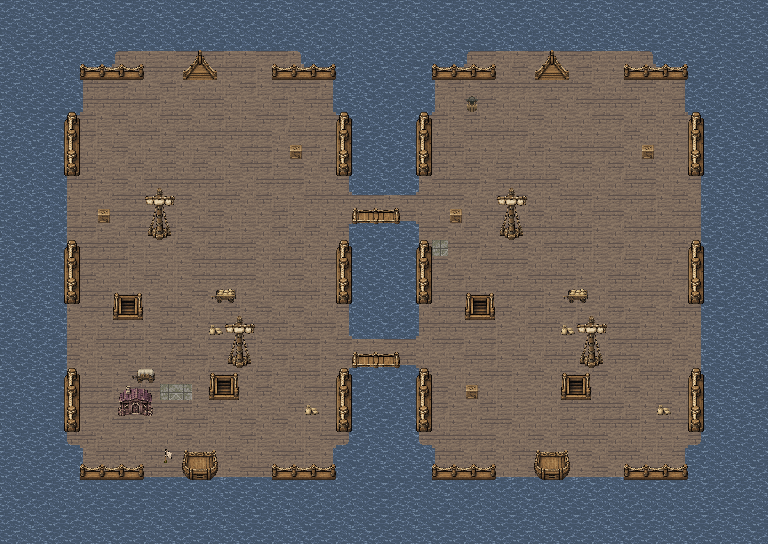
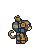
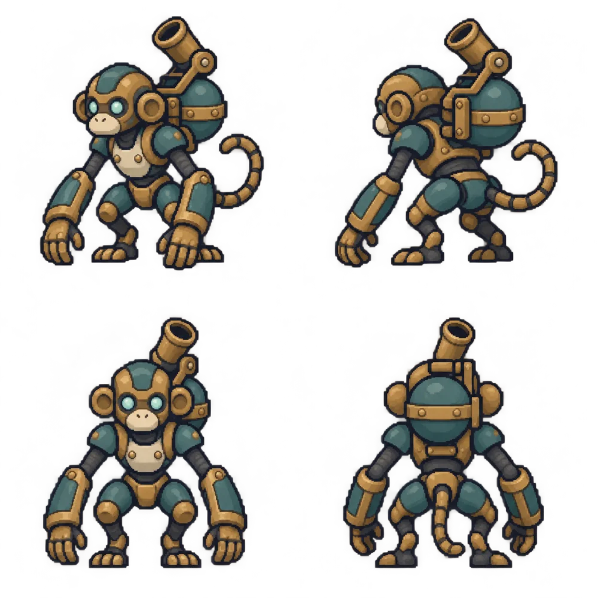

形象与动作
完整背炮新角色的独立动作预览，无原作对应素材。
机械傀儡 / 基础型
靠近时掌击，拉开距离时用背炮投掷水弹。打坏背炮，可以解除远程减速威胁；直接打本体，可以更快取得击败经验。
新角色的独立动作预览，无原作对应素材。
作为参照，F21普通海兵为生命19、力量6、速度4。水猴生命普通、单击更弱，但空手攻速高；水炮负重较大，攻速降到3。
| 项目 | 掌击 | 水炮 |
|---|---|---|
| 攻击距离 | 1 | 1–3 |
| 攻击总威力 | 5 | 8 |
| 基础命中 | 85% | 75% |
| 负重 / 攻速 | 0 / 8 | 5 / 3 |
| 伤害属性 | 物理 | 物理 |
| 附加效果 | 无 | 速度－1 |
基础必杀均为0；最终命中与必杀仍按现有技巧、幸运、地形等规则计算。背炮独立物防2、魔防1。一次行动只选一种攻击，每次出手只投一枚水弹，不附送连击或范围伤害。
这里用每次6点最终伤害演示选择与破坏，不模拟随机命中、角色成长和真实战斗AI。
攻击目标
战斗中 · 掌击与水炮可用
友方示例单位
无减速。水炮命中后速度－1；重复命中只刷新持续时间。
先攻击背炮两次，可以看到本体仍为22，水炮永久禁用；也可以直接击败本体。


水猴零起算坐标(21,14)，即第22列、第15行。现有9名敌人保留，增加后为10名；不挤占跳板、囚舱或指挥官位置。底图与当前F21逻辑地形一致。
胜利目标保留：击败指挥官并保住己方船即可胜利，不等待水猴逃完。想拿水猴的击败经验，需在指挥官战结束前处理它。
普通经验 × 1.5，向上取整
实际经验仍受友方职业与等级修正，并沿用单次经验上限。本体和部位的正常伤害经验也乘1.5；破坏部位不额外发放击杀经验。关卡结算经验不乘此系数。
条件未满足，按普通AI作战。右侧规则演示独立于F21的即时胜利结算。
尚未击败或逃脱。
水炮命中后立即速度－1，最低为0，持续至受击者下一次行动结束；重复命中刷新时限，不变成－2。若该单位本回合已行动，状态保留至它下次行动结束。
伤害只扣所选血条，不向本体传导、不溢出。首击破坏后，本次交锋后续立即停用水炮，按剩余攻击与射程重新检查反击。追击固定原目标，部位已坏则取消该部位后续追击，不转打本体。
地图、战斗场景的待机、四向行走、掌击、受击、撤离与击败都保留弯折炮管和漏水水罐；不会换动作就恢复。仅禁用水炮，掌击、移动和本体生命不因破炮额外受损。
同阵营在场存活的战斗单位全部为机械傀儡时，移动＋3且不叠加。每个本方回合优先撤离，不主动攻击；仅掌击近身自卫。若重新出现非机械友军，则恢复正常行为。
按合法路径代价选择最近可达边缘，不能穿墙、穿过占位或瞬移。F21仅在撤离时允许从船舷下水，以海面代价1走向边界；普通作战仍沿甲板与跳板移动。本示例从(21,14)向东行10格，移动8时两回合退出。
到达边缘立即消失，不计击杀、不发击败经验、不掉击杀战利品，已获得的伤害经验保留。傀儡不会阻挡胜利；胜利目标已达成时直接结算，不强制增加追赶回合。
